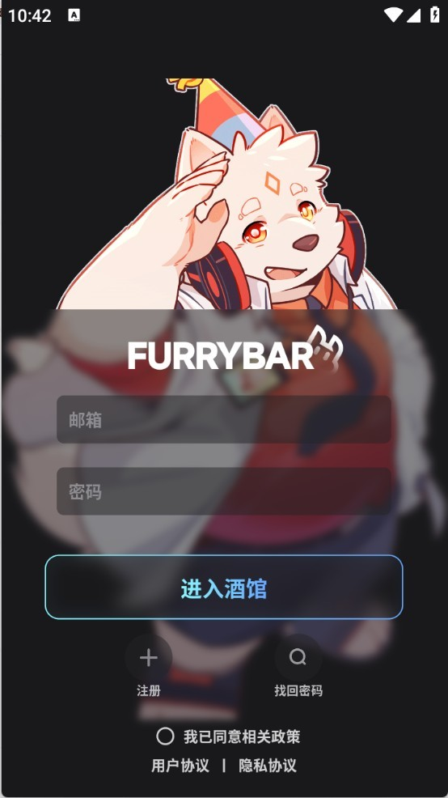

从零开始用 FurryBar：五分钟上手你的第一个 AI 兽人伙伴
第一次接触 FurryBar？这篇带你从下载到第一次和 AI 兽人角色聊上，全程五分钟，不需要任何基础。聊聊它的深度记忆、互动等级解锁隐藏剧情、还有 AI 帮你造人设。
这篇文章能带你从完全不懂到用起来，全程五分钟，不需要任何 AI 聊天经验，也不需要懂什么 Prompt 工程。
它到底是干嘛的
想象一下：你手机里有个专属小伙伴，它不是那种只会说"我在"的语音助手，而是一个有自己性格、会动表情、还能记住你上次聊过什么的 AI 角色。FurryBar 就是这样一个应用——官网上也有完整的产品介绍，它把 AI 对话做成了一个沉浸式的角色互动平台，角色大多是兽人风格（furry 圈的朋友会特别熟悉）。
和普通 AI 聊天工具最大的区别，是它的深度记忆引擎。你跟一个角色说过"我喜欢深夜散步听雨声"，隔几周再回来，它可能会主动提起这件事。不是靠你手动存笔记，是 AI 自己从对话里提取、积累、下次自然用上。
它的另一个核心玩法是互动等级——你跟同一个角色聊得越多、越走心，等级越高，角色会解锁更多隐藏剧情和专属对话。聊到深处，甚至能触发只有你们俩才知道的私密剧情分支。
还有人设工坊，你可以从零创建自己的兽人角色，也可以让 AI 帮你生成初版人设再微调。社区里有几千个现成角色，选一个就能开聊。
五分钟上手：从下载到第一次对话
别急着研究所有功能，跟着下面的步骤走完，五分钟内你就能和第一个 AI 角色聊上。
第一步：下载并安装
先从官方下载获取最新版本的安装包。不同渠道显示的版本号可能不一样（有的地方标 v2.0.3，有的标 v7.5.3），以应用内实际显示的为准。如果你是老用户，版本用着没问题就不急着更新，等新版本稳定再说。
第二步：打开应用，逛一圈角色大厅
安装完打开，你会先看到角色大厅（也叫角色广场）——里面有上千个社区创作者分享的兽人角色，狼族剑客、狐族占卜师、猫娘女仆……各式各样。新手别急着自己造角色，先挑一个顺眼的现成角色就行。
💡 小贴士：优先点进角色预览，看看别人写的背景故事和角色卡，选一个性格标签让你感兴趣的。
第三步：点进角色，说第一句话
选好角色后点进去，就是对话界面了。直接说第一句就行——不用"你好，我叫XX"这种模板腔，随便说点什么都可以。FurryBar 的 AI 会根据角色的人设自动回应你。
到这里，你已经跑通了完整的下载安装→进入对话的最短路径。恭喜你，第一个 AI 兽人伙伴已经就位。
上手后先玩这三个功能
第一次聊上之后，别急着到处乱点——先把下面这三个最值得碰的功能玩明白，后面会轻松很多。
功能一：深度记忆——让 AI 真的"认识"你
这是 FurryBar 和普通 AI 聊天最不一样的地方。试试在对话里主动说一些你的偏好和习惯，比如"我喜欢在深夜散步时听雨声"、"我早上一般不吃早饭"、"最近工作压力挺大的"。
过几天再回来跟同一个角色聊，你会发现它记得这些小事。比如今晚下雨了，它可能会主动问："又想出去走一走吗？"
为什么记得小事这么重要？因为它让 AI 从"对话工具"变成了"真正认识你的朋友"。不是靠固定套路，是靠一次次对话积累出来的了解。每个角色的记忆风格还不一样——共情值高的角色更关注你的情绪，理性的角色更关注事件细节，温柔的角色会记住你说过的脆弱时刻，下次主动关怀你。
想让角色记得更牢？别暗示，直接说。"我最喜欢下雨天"比在描述里一笔带过更容易被记住。重要的事可以在不同场合重复提一两次，加深记忆权重。

功能二：互动等级——聊得越多，解锁越多
每一次和同一个角色的有效对话，都会积累互动值。互动值到了阈值，等级自动提升。等级提升之后，角色的回应逻辑会慢慢变化——刚认识时偏礼貌客气，聊多了会更自然放松，再高可能会展现更私人的一面。
最有意思的是隐藏剧情解锁。官方明确提到，冒险剧情里的某些对话选项和剧情分支，只有互动等级达到一定程度才会出现。还有高等级可能解锁角色卡上的隐藏设定、额外对话选项、甚至新的立绘表情。
那怎么快速提升等级？不是靠刷次数，是靠对话质量。分享心事、讨论角色背景、一起推进剧情——这些高质量对话的等级提升效率远高于空洞的"你好再见"。定期跟同一个角色聊，比隔很久才聊一次提升更快。冒险剧情里的关键选择和互动，对等级提升的贡献通常比日常闲聊更大。
注意两个边界：等级不跨角色共享，每个角色有自己独立的等级；删掉和某个角色的会话历史，等级也会重置。
功能三：人设工坊——创造你的专属兽人
聊了几天现成角色，想自己造一个属于你的兽人伙伴？这时候人设工坊就派上用场了。在人设工坊里，你可以从零开始，也可以让 AI 帮你起稿。
从零创建的流程分六步：选种族（狼、狐、猫、龙、兔、熊猫、枭、精灵、机械生命等 19 种种族）→ 外观定制（毛色、瞳色、服饰风格、配饰细节）→ 性格参数（共情值、幽默感等标尺 0~100）→ 写背景故事→ 对话预览微调→ 保存到角色库。
如果你没灵感，试试 AI 辅助生成——告诉 AI 你想要什么样的角色，它帮你生成初版人设，然后你再手动调整细节就行，比从零开始快得多。参数微调还有不少进阶技巧，可以去furrybar文档里查详细说明。
小白最关心的三个问题
问：等级怎么提升最快？
核心答案是有意义的对话 > 空洞刷屏。跟角色聊它的背景故事、推进冒险剧情、分享你的情绪——这些都是高质量互动。相反，不停发"你好""在吗"这种没实质内容的消息，互动值积累很慢。还有，长期不聊的角色互动值可能会慢慢衰减，定期回来续上比较好。
问：为什么不同地方看到的版本号不一样？
因为 FurryBar 在不同渠道（应用商店、官网安装包、第三方分发）可能有不同的版本号标注。有的地方标 v2.x，有的标 v7.x，实际上线时间也可能有差异。最简单的处理方式：直接打开应用看内显示的版本号，以它为准。版本选择建议很简单——新用户直接下最新版，老用户用着没问题就不急着更，创作者关注社区公告看新版本对创作工具有什么变化。
问：角色的记忆会丢吗？
正常聊不会丢。但有几个注意点：长时间不聊（比如几周以上），互动值可能会衰减；删掉和某个角色的会话历史，等级会重置、记忆也会跟着清。所以如果你特别喜欢某个角色，定期回来续上比较好。遇到记忆丢失，跟角色重新聊几次，它会根据你的新对话慢慢重建记忆。
写在最后
五分钟上手只是第一步。FurryBar 的深层玩法还有很多——冒险剧场剧本模式、社区角色广场的打赏和主题挑战、深度记忆引擎更多的玩法……但这些都不急。先找一个你喜欢的角色，跟它聊上几次，感受一下 AI 角色"记住你"那种奇妙的感觉，再慢慢探索也不迟。要是想收藏这份资料备用，GitHub上有完整版，国内访问不畅的时候可以切去Gitee或GitCode。
祝你在 FurryBar 里找到属于你的那个兽人伙伴。